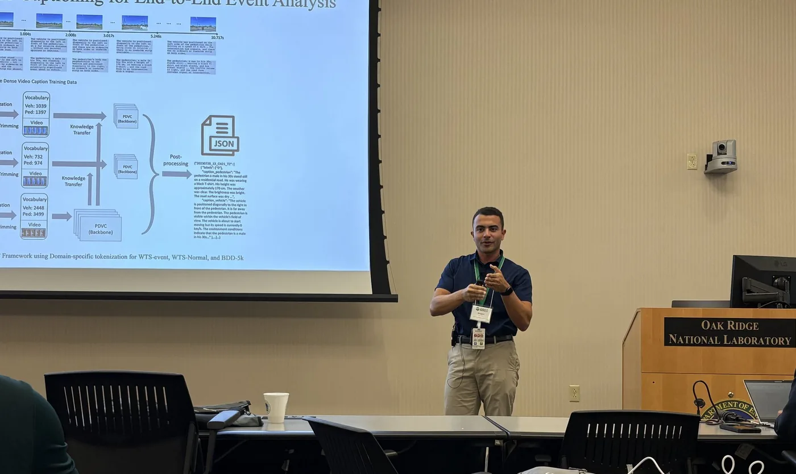
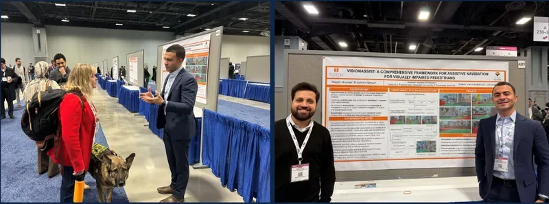
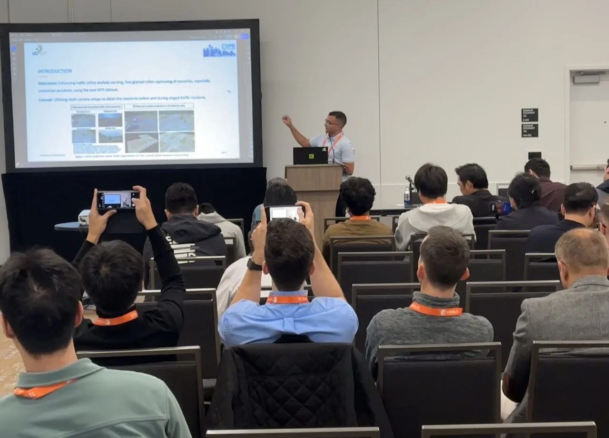
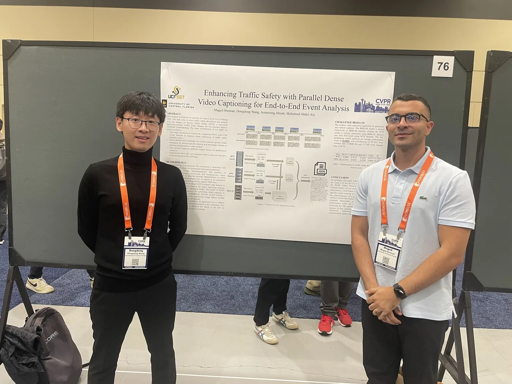

Talks
-
Research, Develop, Deploy

-
Are We Ready to Deploy Agents on the Grid or Plant?

-
Innovations in Challenging the Unexpected in Dashcam Videos
-
VisionAssist: assistive navigation for visually impaired pedestrians

-
Synchronizing sky and street: UAV and CCTV integration for traffic monitoring
-
Enhancing traffic safety with dense video captioning

Presenting the vision-language captioning work at CVPR 2024. 
At the CVPR 2024 poster session in Seattle, with co-author Dongdong Wang. -
Evaluation of connected vehicle data for congestion and incident detection
-
Development and visualization of winter severity impact using multisource data
-
Visualizing transit system performance impacted by COVID-19: St. Louis, Missouri